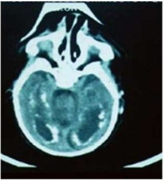

Questão 1 · Esclerose Lateral Amiotróf ica · Reumatologia · Doença do Neurônio Motor · 4000144779Homem, 60 anos de idade, apresenta fraqueza progressiva em todos os segmentos musculares e com piora importante nos últimos 2 meses. Relata início recente de engasgos com líquidos. Exame neurológico: fasciculações nos músculos deltoides e gastrocnêmios, paresia da mão direita, com atro a dos músculos interósseos. Re exos vivos globalmente e sinal de Babinski bilateral. Qual é o diagnóstico mais provável?
A Polimiosite.
B Esclerose Lateral Amiotrófica. O
C Síndrome de Guillain-Barré.
D Miastenia Gravis.
Questão 2 · Semiologia do ombro · 4000144778Mulher, 55 anos de idade, sofreu queda sobre o ombro evoluindo com dor na região anterolateral do ombro e braço. Exame físico: incapacidade de rotação lateral do ombro e teste de Patte positivo. As radiogra as do ombro são normais. Assinale a alternativa que corresponde à lesão mais provável.
A Lesão do tendão do supraespinal.
B Lesão do tendão do subescapular.
C Lesão do tendão do peitoral maior.
D Lesão do tendão do infraespinal.
Questão 3 · Torcicolo muscular congênito · 4000144777Lactente, 40 dias de vida, nasceu de parto cesáreo com 41 semanas, por apresentação córmica, pesando 4.110 g, Apgar 9/10, alta com a mãe. Há 10 dias o pai notou posição viciosa da cabeça para a esquerda, além de “caroço” na região cervical esquerda. Exame físico: tumor broelástico fusiforme na região cervical esquerda, de 3,5 cm de diâmetro, não aderido à pele, sem sinais ogísticos e com encurtamento da musculatura da região. Qual é o diagnóstico e a conduta mais adequada?
A Remanescência de segundo arco branquial e sendo necessária cirurgia.
B Torcicolo congênito e sendo necessária fisioterapia motora.
C Síndrome de Sandifer e sendo necessárias medidas posturais e pró cinéticos.
D Neoplasia cervical e biópsia da lesão.
Questão 4 · Enterocolite necrosante e dieta no prétermo · Pediatria · 4000144776Lactente, nasceu de parto cesáreo de urgência, com 34 semanas, devido à restrição de crescimento intrauterino (peso ao nascimento 1.750 9) e doença hipertensiva especí ca da gestação. Não houve intercorrências no parto e o Apgar foi 3 e 8. No terceiro dia de vida, evoluiu com distensão abdominal associada a resíduo bilioso em sonda, hipoatividade e dor à palpação de abdome. Radiografia simples de abdome: distensão difusa de alças e imagens radiolucentes bolhosas na parede das alças no flanco direito e mesogástrio. Assinale a alternativa correta.
A O diagnóstico é enterocolite necrosante, confirmado pela presença de distensão intestinal com pneumatose na radiografia.
B Está descartada enterocolite necrosante, uma vez que o paciente tem apenas 3 dias de vida.
C Existe apenas suspeita de enterocolite necrosante, necessitando maior observação clínica para decidir sobre o início do tratamento.
D O achado de bolhas radiolucentes em parede intestinal é suficiente para caracterizar este paciente como portador de enterocolite necrosante estádio |.
Revisar: possível letra faltando em enunciado
Questão 5 · Tratamento e conduta · 4000144775Homem, 45 anos de idade, hígido, apresenta lesão cutânea de 1,5 cm de diâmetro, no tórax. Diante da suspeita de melanoma, qual é a conduta mais adequada?
A Biópsia excisional com margens de 1 a 2 mm,incluindo tecido adiposo subjacente.
B Biópsia incisional sem chegar no tecido adiposo para não ocorrer disseminação do tumor.
C Biópsia excisional com margem de 1 cm, incluindo a fascia muscular subjacente.
D Biópsia aspirativa por agulha fina para obtenção de material citológico.
Questão 6 · Critérios para Admissão em UTI e Unidade de Queimados · Queimaduras Elétricas · Cirurgia · 4000144774Homem, 24 anos de idade, 70 kg, hígido, encostou num o de alta tensão, com entrada da corrente elétrica nas mãos e saída nos pés. As lesões totalizaram 15% de superfície corpórea. Qual é a conduta mais adequada?
A Internação pela superfície queimada e por apresentar risco de arritmia cardíaca e lesão renal aguda.
B Internação e hidratação com solução de Ringer Lactato 1.000 ml a cada 2 h nas primeiras 24nh.
C Internação e hidratação para se obter uma diurese acima de 4 ml/kg/h.
D Internação por risco de sindrome compartimental e manter hidratação sem maior rigor.
Questão 7 · Indicações de Toracotomia de Emergência · Cirurgia · 4000144773Homem, 60 anos de idade, é trazido ao PS vítima de trauma penetrante na parede torácica anterior, com suspeita de ferimento cardíaco. Frente à necessidade de toracotomia na sala de emergência, qual é a via de acesso preferencial?
A Toracotomia ântero-lateral esquerda.
B Toracotomia póstero-lateral esquerda.
C Toracotomia póstero-lateral direita.
D Toracotomia ântero-lateral direita.
Questão 8 · Terapia de ressincronização cardíaca · Cardiodesf ibrilador implantável · 4000144772Mulher, 75 anos de idade, com cardiomiopatia dilatada evoluindo com insu ciência cardíaca congestiva, NYHA tipo funcional IIl, com medicação otimizada. Ecocardiograma: fração de ejeção ventricular esquerda = 28%, Holter: ritmo sinusal, FC média de 55 bpm, ausência de pausas > 2,0 s e bloqueio de ramo esquerdo com QRS = 180 ms. O tratamento mais adequado é:
A marcapasso VV.
B marcapasso DDD.
C ressincronizador cardíaco + cardiodesfibrilador implantável.
D transplante cardíaco.
Questão 9 · Cardiopatias congênitas · Pediatria · 4000144771Lactente, quatro meses de idade, é encaminhado da UBS com história de di culdade de ganho de peso, cansaço às mamadas e sudorese intensa. Examefísico: taquidispnéia, sopro sistólico rude no bordo esternal esquerdo baixo e taquicardia. Eletrocardiograma: sobrecarga biventricular; radiogra a de tórax: hiper uxo pulmonar. Qual é o diagnóstico mais provável?
A Atresia da valva tricúspide com estenose pulmonar.
B Transposição das grandesartérias.
C Comunicação interventricular com repercussão hemodinâmica.
D Tetralogia de Fallot.
Questão 10 · Cirurgia · Coledocolitíase · 4000144770Mulher, 35 anos de idade, é admitida no PS com queixa de dor em cólica no hipocôndrio direito há 3 dias, com melhora há 1 dia, quando passou a apresentar urina escura e olhos amarelados. Examefísico: BEG, afebril, ictérica +/4+. Ultrassonogra a: cálculos na vesícula biliar e um cálculo no colédoco. Hemograma sem leucocitose, bilirrubina direta = 2,5 mg/dL (VR: < 0,3 mg/dL) e amilase = 105 UI/L (VR: < 125 UI/L). Colangiorressonância: hepatocolédoco medindo 10 mm contendo um cálculo de 1 cm. Qual é a melhor conduta?
A Papilotomia com retirada do cálculo por via endoscópica e colecistectomia laparoscópica na mesma internação.
B Papilotomia com retirada do cálculo por via endoscópica e colecistectomia laparoscópica, após 4 a 6 semanas.
C Papilotomia com retirada do cálculo por via endoscópica e colecistectomia laparoscópica em um só tempo cirúrgico, após 4 a 6 semanas.
D Colecistectomia por via laparoscópica e programar a realização de papilotomia endoscópica para clareamento da via biliar.
Questão 11 · Úlcera péptica Perf urada · Cirurgia · 4000144769Homem, 39 anos de idade, é admitido no PS com queixa inicial de dor abdominal no andar superior, de início súbito há 5 horas, com piora da intensidade e irradiação para todo o abdome. Refere rotina intensa de trabalho, com alimentação desregrada. Sem comorbidades. Exame físico: REG, descorado, desidratado, FC = 110 bpm, FR = 20 ipm, T = 37,9ºC. Abdome distendido, doloroso difusamente à palpação, dor à descompressão brusca; timpáânico à percussão, perda da macicez hepática no hipocôndrio direito; RHA diminuídos. Qual é a hipótese diagnóstica, o exame indicado para confirmar a hipótese e o tratamento adequado?
A Abdome agudo perfurativo por apendicite perfurada, tomografia de Abdome sem contraste, apendicectomia.
B Abdome agudo perfurativo por úlcera gastroduodenal perfurada, Rx de Abdome em 3 posições, laparotomia exploradora para rafia de úlcera e lavagem da cavidade.
C Abdomeagudo inflamatório por diverticulite, tomografia de Abdome sem contraste, laparotomia para drenagem da cavidade.
D Abdome agudo inflamatório por colecistite aguda, ultrassonografia de Abdome superior, colecistectomia.
Questão 12 · Trauma da Bexiga · 4000144768Motorista, 32 anos de idade, utilizando cinto de segurança de 3 pontos, foi vítima de acidente automobilístico, sendo atendido no PS com dor abdominal importante. A tomogra a abdominal evidenciou grande quantidade de líquido abdominal, sendo indicada laparotomia exploradora, com achado de laceração intraperitoneal da bexiga urinária de aproximadamente 5 cm de extensão. Assinale a alternativa correta quanto à escolha do fio a ser utilizado na sutura vesical.
A Poliamida
B Poliglactina
C Polipropileno
D Poliéster
Questão 13 · Divertículo de Zenker · Esof agograma Baritado · 4000144767Mulher, 88 anos de idade, com quadro de disfagia, regurgitação de alimentos não digeridos, murmúrios no pescoço após alimentação, halitose e emagrecimento, foi admitida na UTI por broncoaspiração e pneumonia. Baseado na história e na imagem abaixo do deglutograma, assinale a alternativa com o diagnóstico mais provável.

A Divertículo de Zencker.
B Tumor do mediastino.
C Bócio mergulhante de tireoide.
D Higroma cístico.
Questão 14 · Hemorragia Digestiva HD · Hemorragia Digestiva Alta Varicosa HDA Varicosa · 4000144766Homem, 62 anos de idade, é admitido no PS com história de vômitos com sangue há 20 minutos. Exame físico: FC = 120 bpm, PA = 90/60 mmHg,icterícia ++/4+, descorado ++/4+, ascite leve e rebaixamento do nível de consciência. Qual é a hipótese diagnóstica mais provável?
A Hemorragia de úlcera gástrica.
B Sangramento de varizes isoladas de fundo gástrico.
C Sangramento de varizes esofágicas.
D Sangramento de tumor estenosante de esôfago.
Questão 15 · ITU no portador de sonda vesical de demora SVD · 4000144765Homem, 30 anos de idade, com lesão raquimedular sacral, evoluiu com quadro de bexiga acontrátil. Qual é a técnica de drenagem vesical de escolha?
A Cateterismointermitente.
B Cistostomia.
C Sonda vesical de demora.
D Uretrostomia.
Questão 16 · Endocrinologia · Hipopituitarismo · 4000144764Homem, 38 anos de idade, infértil, apresenta azoospermia e IMC = 50 kg/m² . Exame físico: testículos de 10 cm³ bilateralmente. Testosterona total = 130 ng/dL (VR: 300 - 900), Estradiol = 52 pg/mL (<30), LH = 0,4 UI/L (VR: 2 a 12,1) e FSH = 0,8 UI/L (<10). Qual é o tratamento medicamentoso mais indicado?
A Citrato de clomifeno.
B Anti-oxidantes.
C Inibidor de aromatase.
D Reposição de testosterona.
Questão 17 · Cirurgia · Ruptura de Aneurisma da Aorta Abdominal · 4000144763Homem, 71 anos de idade, é admitido com dor abdominal em mesogástrio, contínua, com irradiação lombar há 7 horas. Nega trauma ou queda. Trouxe uma angiotomogra a prévia que confirmou aneurisma de aorta abdominal infra-renal. Exame físico: corado, consciente, eupneico, PA = 160/90 mmHg, FC = 92 bpm, com dor à palpação da aorta abdominal. Pulsos presentes e normais em membros inferiores. Qual é a conduta mais adequada?
A Tratamento endovascular de urgência do aneurisma de aorta abdominal, se as condições anatômicas do aneurisma forem favoráveis.
B Manter rigoroso controle pressórico em níveis de 120/80 mmHg,avaliação e melhor preparo do paciente para cirurgia convencional.
C Tratamento cirúrgico convencional de urgência por quadro de aneurisma de aorta abdominal roto e tamponado.
D Solicitar nova angiotomografia de urgência para afastar aneurisma inflamatório e decidir pela necessidade ou não de tratamento cirúrgico.
Questão 18 · Tromboembolismo Arterial · Cirurgia · 4000144762Homem,42 anosde idade, apresenta isquemia grave no membro inferior direito há 3 horas, com dor de forte intensidade, palidez, gradiente térmico e diminuição importante da perfusão do pé. Nega claudicação intermitente e relata malformação congênita cardíaca, sem tratamento específico. Exame físico: ausência de pulso femoral, poplíteo e distais em membroinferior direito, com pulsos normais em outros membros. Qual é a alternativa correta?
A Deve-se realizar ultrassonografia Doppler venosa para afastar um quadro de phlegmasia alba dolens.
B Investigar uso de drogas ilícitas pelo diagnóstico de vasoespasmo e trombose.
C Trata-se de trombosearterial aguda com lesão ao nível do canal dos adutores em membroinferior direito.
D Trata-se de embolia arterial aguda com provável fonte embolígena cardíaca, ou uma embolia arterial paradoxal.
Questão 19 · Manejo PósOperatório · 4000144761Mulher, 60 anos de idade, internada na UTI, foi traqueostomizada há 12 horas. Durante o banho da paciente, ocorre perda da cânula de traqueostomia. Qual é a conduta mais adequada?
A Intubação orotraqueal.
B Recolocar a cânula de traqueostomia.
C Realizar ventilação não invasiva.
D Cricotireoidostomia.
Questão 20 · Lesão Traumática do Esôf ago · 4000144760Homem,52 anos de idade, é admitido no PS com disfagia, taquicardia e febre após endoscopia digestiva alta há mais de 24 horas. Radiogra a de tórax: pneumomediastino e alargamento mediastinal. Tomogra a computadorizada: coleção líquida e ar na região mediastinal. Qual é a conduta mais adequada?
A Drenagem pleuro-mediastinal bilateral e antibioticoterapia.
B Toracotomia com limpeza e drenagem ampla do mediastino.
C Tratamento conservador com sonda nasogástrica, jejum e antibioticoterapia.
D Drenagem, guiada por ultrassonografia, da região mediastinal, jejum e antibioticoterapia.
Questão 21 · Inf ecção de Trato Urinário ITU · Pediatria · Investigação por imagem · 4000144759Menina, 2 anos de idade, com febre há 3 dias, é levada ao PS por queda do estado geral há 12 horas. Após avaliação clínica, foram solicitados exames laboratoriais e ultrassonogra a do sistema urinário. Neste contexto, assinale a alternativa correta sobre a interpretação do resultado da ultrassonografia.
A Cálculo coraliforme pode ser um achado de exame incidental, sem relação com o quadro clínico apresentado.
B A presença de dilatação pielocalicial e ureteral está associada a refluxo vésico-ureteral e risco de pielonefrite.
C Estenose da junção uretero-piélica unilateral é o achado mais provável para justificar o quadro clínico.
D Espessamento da parede da bexiga e urina com debris ecogênicos em suspensão indicam tratar-se de cistite fúngica.
Questão 22 · Rastreio da retinopatia diabética · 4000144758Adolescente, 12 anos de idade, com história de perda de peso, poliúria e polidipsia há um mês, é trazido ao PS por dor abdominal difusa e vômitos há dois dias. Exame físico: regular estado geral, taquicárdico e taquipnéico, ausculta pulmonar e cardíaca sem alterações, abdome ácido, doloroso à palpação difusamente, com descompressão brusca negativa. Glicemia capilar: 426 mg/dL. Considerando o diagnóstico do paciente, a avaliação oftalmológica deve ser realizada:
A imediatamente, pois é essencial para conduta.
B anualmente, a partir do diagnóstico.
C anualmente, a partir de cinco anos do diagnóstico.
D a cada seis meses, a partir do diagnóstico.
Questão 23 · Pediatria · Endocrinologia pediátrica · 4000144757Menina, 7 anos de idade, previamente hígida, é trazida ao PS com febre, emagrecimento, aumento da sede e diurese abundante. Exame físico: desidratada e taquidispneica. Exames laboratoriais: glicemia = 588 mg/dL; pH = 7,13; HCOº = 5,0 mEg/L; Na = 131 mEg/L; K = 3,1 mEg/L; hemograma com leucocitose. Iniciou-se hidratação endovenosa com soro fisiológico 20 mL/kg na 1º hora. Qual é a conduta na 22 hora?
A Correção da acidose metabólica com bicarbonato de sódio.
B Iniciar insulina de ação intermediária endovenosa.
C Iniciar reposição endovenosa de potássio.
D Modificar o soro de hidratação para glicofisiológico (1:1).
Questão 24 · Def inição das síndromes talassêmicas · Talassemias · 4000144756Menino, 12 meses de idade, tem anemia desde os 9 meses, sem resposta ao tratamento com sulfato ferroso. Examefísico: descorado 2+/4, sem outras alterações. Exames laboratoriais: eritrócitos = 5,2 milhões/uL; Hb = 9,29/dL dL (VR: 13,5 — 17,5 g/dL); VCM = 69 fL (VR: 80 — 96 fL); HCM = 21pg (VR: 30 - 33); RDW = 13,8%; reticulócitos = 1,5% (VR: 0,5 — 1,5% mm); leucócitos = 9200 (com distribuição normal); plaquetas = 325.000/mm(VR: 150,000 — 450.000 mm); ferro sérico = 55 mcg/dL (VR: 40 - 120); ferritina = 32 mcg/dL (VR: 7 - 140); saturação de transferrina= 25% (VR: 20 - 55). O diagnóstico mais provável é:
A Aplasia pura da série vermelha.
B Esferocitose hereditária.
C Doença falciforme.
D Talassemia.
Questão 25 · Pediatria · Doença de Kawasaki · 4000144755Menino, 4 anos de idade, apresenta febre há 6 dias, com manchas pelo corpo (tronco, braço e raiz de pernas), olhos vermelhos sem secreção,língua vermelha e muita irritabilidade. Em relação ao diagnóstico mais provável, pode-se a rmar que:
A neutropenia na fase aguda e plaquetose na fase subaguda são características da doença.
B sua principal complicação é a meningite bacteriana, refletida na irritabilidade da criança.
C a linfadenomegalia maior que 1,5 cm faz parte dos seus critérios diagnósticos.
D sua principal complicação é a febre reumática com pancardite.
Questão 26 · Pediatria · Neonatologia · Inf ecções congênitas · 4000144754Recém-nascido a termo, três dias de vida, apresenta petéquias e equimoses disseminadas e hepatoesplenomegalia. Emissões otoacústicas ausentes na triagem auditiva. Exame oftalmológico e análise de líquor normais. Tomogra a de crânio em anexo. Considerando a hipótese diagnóstica mais provável, qual tratamento é mais recomendado?

A Ganciclovir por 6 semanas.
B Aciclovir por 6 meses.
C Sulfadiazina, pirimetamina e ácido folínico por 12 meses.
D Valganciclovir por 6 meses.
Questão 27 · Pediatria · Hematologia Pediátrica · 4000144753Menina, 3 anos de idade, trazida ao PS com dor no punho esquerdo há 15 dias e nos joelhos há 5 dias, sem trauma e acompanhada de febre baixa, intermitente, há 7 dias. Exame físico: bom estado geral, palidez cutaneomucosa, petéquias nos braços, distensão abdominal com gado palpável a 3 cm do rebordo costal direito e baço a 4 cm do rebordo costal esquerdo, com lojas renais livres. Qual o diagnóstico mais provável e os exames indicados para sua confirmação?
A Leucemia Mielóide Aguda - mielografia com imunofenotipagem e colonoscopia.
B Leucemia Linfóide Aguda - DHL, VHS e tomografia de pescoço, tórax, abdome e pelve.
C Leucemia Linfóide Aguda - hemograma completo e mielograma com imunofenotipagem.
D Linfoma de Burkitt - DHL, mielografia, PET-CT oncológico e ressonância de corpo total.
Questão 28 · Teste do pezinho · Cuidados neonatais · Pediatria · 4000144752Um recém-nascido apresenta o resultado FAS no exame de triagem neonatal para hemoglobinopatias. Qual é o diagnóstico?
A Traço falciforme.
B SB+ talassemia.
C Anemia falciforme.
D Hemoglobinopatia SC.
Questão 29 · Alergia à proteína do leite de vaca · Pediatria · Tratamento · 4000144751Lactente, 60 dias de vida, alimentado com fórmula infantil com proteínas integras do leite de vaca, apresenta fezes amolecidas com sangue, diariamente, desde 45 dias de vida, sem febre, vômitos ou diminuição da ingestão alimentar. Exame físico: bom estado geral, corado, hidratado e com crescimento adequado. Qual a conduta adequada?
A Substituição completa da dieta por fórmula com proteínas parcialmente hidrolisadas com proteína isolada de soja.
B Antibioticoterapia com sulfametoxazol-trimetropin ou ceftriaxona.
C Colonoscopia para definição do diagnóstico antes de iniciar o tratamento.
D Substituição completa da dieta por fórmula com proteínas extensamente hidrolisadas.
Questão 30 · Diagnóstico da Diarreia Crônica · Tratamento da Diarreia Crônica · 4000144750Assinale a alternativa correta em relação à enteropatia ambiental (disfunção entérica ambiental).
A É consequência de parasitose intestinal múltipla.
B Não compromete o estado nutricional e o crescimento.
C Administração de zinco e ferro proporcionam reversão do quadro.
D Pode se associar com aumento da permeabilidade intestinal.
Questão 31 · Políticas de Saúde do Sistema Único de Saúde · 4000144749De acordo com a Portaria do Ministério da Saúde de 04 de março de 2020, a doença incluída no Programa de Triagem Neonatal e uma das justificativas que fundamenta esta decisão são:
A Toxoplasmose congênita e prevenção da deficiência visual na infância.
B Deficiência de Glicose 6-Fosfato Desidrogenase e prevenção da encefalopatia bilirrubínica.
C Deficiência de Acil-CoA Desidrogenase de Cadeia Média e prevenção da síndrome da morte súbita do lactente.
D Galactosemia e prevenção da sepse neonatal tardia.
Questão 32 · Agentes etiológicos · PneumoniasBroncopneumonias BCP na Inf ância · Doença pneumocócica · 4000144748Quais microrganismos adquiriram maior importância na frequência de pneumonias após a inserção da vacina antipneumocócica conjugada no calendário vacinal?
A Vírus em lactentes e Mycoplasma pneumoniae em escolares.
B Haemophilus influenzae capsulados em pré-escolares e vírus influenza na adolescência.
C Pneumococos resistentes à penicilina e Chlamydia trachomatis em pré-escolares.
D Vírus influenza em escolares e Bordetella pertussis em lactentes jovens.
Questão 33 · Vacinas contra sarampo caxumba rubéola e varicela · Pediatria · 4000144747Na avaliação da carteira de vacinação, em relação à vacina de sarampo, é correto afirmar que:
A o calendário vacinal do Ministério da Saúde para crianças prevê uma dose aos 12 meses e outra aos 4 anos de idade.
B doses administradas antes de 12 meses de idade não são consideradas válidas.
C o calendário vacinal do Ministério da Saúde para adultos até 40 anos prevê duas doses de vacina de sarampo.
D indivíduos acima de 60 anos devem ter uma dose de vacina de sarampo registrada em carteira.
Questão 34 · Diagnóstico · Desnutrição · Pediatria · 4000144746Qual dos índices antropométricos listados indica dé cit nutricional crônico em crianças e adolescentes, quando abaixo de dois desvios-padrão da média da população de referência para idade e sexo?
A Estatura para idade.
B Indice de massa corporal para idade.
C Peso para estatura.
D Perímetro cefálico para idade.
Questão 35 · Pediatria · Manejo da hidratação · 4000144745Menino, 8 meses de idade, eutró co, em aleitamento materno com boa aceitação, apresenta há 2 dias evacuaçõeslíquidas 6 vezes ao dia, sem sangue, muco ou pus. Exame físico: irritado, com olhos fundos, mucosas secas e choro sem lágrimas. Com basenestas informações, assinale a alternativa que apresenta a conduta inicial mais adequada.
A Administrar hidratação via parenteral, com 60 mL/kg em 4 horas, com posterior reavaliação, mantendo dieta sem lactose durante a reidratação.
B Administrar hidratação via parenteral, com 60 mL/kg em 4 horas, com posterior reavaliação, mantendo aleitamento materno durante a reidratação.
C Administrar solução de reidratação oral no serviço, com 60 mL/kg em 4 horas, com posterior reavaliação, mantendo dieta sem lactose durante a reidratação.
D Administrar solução de reidratação oral no serviço, com 60 mL/kg em 4 horas, com posterior reavaliação, mantendo aleitamento materno durante a reidratação.
Revisar: possível letra faltando em enunciado
Questão 36 · DNPM Desenvolvimento NeuroPsicoMotor · Pediatria · Avaliando o desenvolvimento · 4000144744Lactente, 5 meses de idade, nascido a termo, sem intercorrências neonatais, veio à consulta de puericultura. O médico observa que a criança consegue rolar de decúbito dorsal para ventral, segurar chocalho e depois levá-lo à boca e virar a cabeça para localizar a fonte do som. Que outra habilidade é esperada para uma criança desta idade?
A Imitar gestos como bater palma, dar tchau.
B Apontar para brinquedo desejado.
C Descobrir brinquedo sob um pano.
D Interagir com a mãe, sorrindo e vocalizando.
Questão 37 · Relação MédicoPaciente · Pediatria · 4000144743Na prática clínica pediátrica para a comunicação de más notícias, o Protocolo SPIKES de Bayle e Buckman (2000) tem sido utilizado. Sobre este protocolo, assinale a alternativa correta:
A Deve-se formular perguntas abertas para investigar o que a família quer saber sobre a doença e tratamento de seu filho.
B Durante o processo de comunicação, períodos de silêncio podem provocar muita angústia e devem ser evitados.
C O sexto passo deve ser suprimido em caso de morte, uma vez que não é mais possível fazer um plano terapêutico para paciente e familiares.
D Com o objetivo de evitar angústia e sofrimento, deve-se evitar abordar situações de incerteza sobre diagnóstico e prognóstico.
Questão 38 · Pediatria · Classif icação e Tratamento da Crise · 4000144742Menino, 8 anos de idade, chega ao PS em regular estado geral, agitado, taquidispneico, com retração intercostal e subdiafragmática moderada. Frequência respiratória de 36 irpm e saturação arterial de oxigênio (SatO2) 92% em ar ambiente. Ausculta pulmonar com MV diminuído globalmente e sibilos difusos. Mãe refere que ele tem asma e no trajeto de 40 minutos utilizou salbutamol inalatório por 2 vezes, 4 pu s/vez. De acordo com as recomendações do GINA (Global Initiative for Asthma, 2020) qual é a conduta mais adequada quanto ao fornecimento de oxigênio?
A Não há necessidade de oferta de O2 suplementar porque a SatO” está acima de 90%.
B Máscara simples de oxigênio, porque fornece concentrações de oxigênio acima de 60%.
C Cateter de O² com fluxo de 2 L/minuto, mantendo SatO² alvo acima de 92%.
D Máscara de Venturi com fração inspirada de oxigênio de 50%, mantendo SatO² alvo acima de 94%.
Questão 39 · Cardiopatias congênitas · Pediatria · 4000144741Você está em um hospital secundário com um recém-nascido portador de cardiopatia com uxo sistêmico dependente de canal arterial, que necessita de intervenção cirúrgica de urgência. O hospital de referência para cirurgia cardíaca disponibilizou a vaga. O paciente está com hemoglobina de 9 g/dL, temperatura de 350 C e pH na gasometria arterial de 7,1. Qual é a conduta mais adequada?
A Encaminhar o paciente nessas condições, já que ele necessita cirurgia e a obtenção da vaga é difícil.
B Ligar para o hospital avisando que o paciente está sem condições para o transporte no momento.
C Aumentar a temperatura da incubadora, solicitar sangue e transfundir durante o transporte.
D Solicitar autorização dos pais e corrigir a acidose e a hipotermia durante o transporte.
Questão 40 · Tratamento de Manutenção · Pediatria · Classif icação do controle clínico da asma · 4000144740Menino, 7 anos de idade, apresenta episódios recorrentes de tosse seca, chiado e falta de ar nos últimos 3 meses, com uso frequente de broncodilatador. Refere, ainda, falta de ar e chiado no peito ao correr ou subir escadas. Nega crises graves ou internação. Para o controle da asma deste paciente é indicado:
A uso diário de corticoide inalatório em dose alta e broncodilatador de longa ação nas crises.
B uso de corticoide inalatório em dose alta com broncodilatador de longa ação, diariamente e nas crises.
C uso diário de antileucotrieno e broncodilatador de longa ação nas crises.
D uso diário de corticoide inalatório em dose baixa e broncodilatador de curta ação nas crises.
Questão 41 · Angiotomograf ia de tórax · 4000144739Homem, 58 anos de idade, atendido no PS com suspeita de tromboembolismo pulmonar, tem indicação de realizar angiotomografia de tórax. Relata que tem “alergia a iodo”. Diante do exposto, qual é a melhor conduta para o caso?
A Administrar 500 mL de soro fisiológico endovenoso antes de realizar a angiotomografia.
B Não realizar angiotomografia pelo alto risco de reação do tipo alérgica grave.
C Realizar a tomografia de tórax sem a utilização do meio de contraste.
D Se houve reação leve em exame prévio, realizar a angiotomografia sem pré- medicação.
Questão 42 · Queimaduras Químicas Oculares · Corpo Estranho Corneano e Conjuntival · 4000144738Homem, 40 anos de idade, refere acidente com água sanitária atingindo os olhos, quando estava limpando o banheiro de casa há 20 minutos. Exame físico: fácies de dor, edema palpebral e hiperemia conjuntival em ambos os olhos, com grande possibilidade da presença de resíduos de hipoclorito de sódio. Qual a conduta inicial mais adequada?
A Encaminhar para avaliação oftalmológica de urgência.
B Realizar neutralização do pH básico com ácido fraco.
C Realizar lavagem copiosa de ambos os olhos com soro fisiológico 0,9%.
D Prescrever lubrificante ocular de 6 em 6h e reavaliação em 7 dias.
Questão 43 · Promoção à Saúde x Prevenção de Doenças · 4000144737Para a prevenção de doenças crônicas não transmissíveis, a OMS recomenda que adultos de 18 a 64 anos de idade pratiquem:
A pelo menos 150 minutos por dia de atividade física aeróbica de intensidade leve ou 75 minutos por dia de atividade física aeróbica moderada ou combinação equivalente das intensidades.
B pelo menos 30 minutos por dia de atividade física moderada a vigorosa, ou 60 minutos por semana de atividade física aeróbica vigorosa ou combinação equivalente das intensidades.
C pelo menos 150 minutos por semana de atividade física aeróbica de intensidade moderada ou 75 minutos por semana de atividade física aeróbica vigorosa ou combinação equivalente das intensidades.
D pelo menos 120 minutos por semana de atividade física aeróbica de intensidade moderada ou 60 minutos por semana de atividade física aeróbica vigorosa ou combinação equivalente das intensidades.
Questão 44 · Letalidade · Incidência · Mortalidade · 4000144736No Brasil, entre 26 de fevereiro e 26 de abril de 2020, ocorreram 67.471 casos confirmados e 4.592 óbitos pela COVID-19. Considerando uma população de 212 milhões de habitantes, quais foram, respectivamente, as taxas de incidência, mortalidade e letalidade da doença no Brasil no período estudado?
A 2,2/100.000 habitantes; 31,8/100 mil habitantes e 6,8%.
B 31,8/100 mil habitantes; 6,8% e 2,2/100 mil habitantes.
C 31,8/100 mil habitantes; 2,2/100 mil habitantes e 6,8%.
D 2,2/100 mil habitantes; 6,8% e 31,8/100 mil habitantes.
Questão 45 · Atenção Primária à Saúde APS no Brasil · 4000144735O Sistema Único de Saúde estruturou a Rede de Atenção à Saúde (RAS) com o objetivo de prestar atençãointegral e de qualidade. Assinale a alternativa correta relacionada à função estratégica da Atenção Básica (AB) na constituição da RAS.
A A AB deve estar restrita a realizar ações de prevenção e proteção à saúde, cabendo à atenção especializada ambulatorial e hospitalar realizar ações de diagnóstico e tratamento.
B A AB deve atuar de forma seletiva, restringindo sua ação a regiões pobres, com conjunto de tecnologias simples e de baixo custo.
C A gestão da AB tem como princípio a oferta de procedimentos que visem maior racionalização de custos do sistema.
D A AB é uma das portas de entrada do sistema, com a função de atender de modo resolutivo às necessidades e problemas de saúde mais frequentes da população.
Questão 46 · Risco Relativo RR Razão de Riscos · 4000144734Para verificar se o fato de mulheres adultas terem sido amamentadas pelas mães está associado ao câncer de mama, foi realizado um estudo do tipo coorte retrospectiva. Ao nal do estudo observou-se que o risco relativo (RR) de desenvolver câncer de mama entre mulheres amamentadas pela mãe com referência às não amamentadas foi de 0,69 (1C95%: 0,53; 0,90). Com esse resultado, ao nível de significância de 5%, pode-se concluir que:
A houve associação significativa entre ter sido amamentada e câncer de mama, sendo que ter sido amamentada pela mãe diminuiu o risco de câncer de mama em 69%.
B não houve associação significativa entre ter sido amamentada e câncer de mama, pois RR=0,69 é menor que o valor limite 1,0.
C não houve associação significativa entre ter sido amamentada e câncer de mama, pois o valor RR=1,0 não está contido no IC95%.
D Houve associação significativa entre ter sido amamentada e câncer de mama, sendo que ter sido amamentada pela mãe diminui o risco de câncer de mama em 31%
Questão 47 · Atenção Primária à Saúde APS no Brasil · 4000144733Na atenção básica em saúde, qual a principal justificativa para a proposta do trabalho em equipe, em substituição ao trabalho individualizado por profissional de saúde?
A A especialização dos processos de trabalho, que não guardam conexões entre si, são isolados e independentes.
B O projeto terapêutico singular, em que cada profissional colabora individualmente para a resolução do caso do sujeito e de sua família.
C A equidade da saúde, finalidade buscada pelos profissionais de saúde ao minimizarem as diferenças técnicas de seus trabalhos parcelares.
D A integralidade, que visa responder às necessidades dos indivíduos, articulando a promoção da saúde, a prevenção de doenças, a atenção curativa e a reabilitação.
Questão 48 · Princípios da Medicina de Família e Comunidade · 4000144732As doenças e as preocupações com a saúde são universais na vida humana e as sociedades buscam respostas às experiências ou episódios de doença e infortúnios, sejam eles individuais ou coletivos. Qual das alternativas expressa esta afirmação?
A Os diagnósticos de doença são universais na vida humana.
B As sociedades desenvolvem conhecimentos, práticas e instituições, que podem ser denominadas sistema cultural e social de saúde.
C Os Sistemas sociais e culturais de saúde são dissociados da visão de mundo dos grupos distintos.
D O modelo cultural de saúde reflete o modelo biomédico.
Questão 49 · Transtornos do Humor · 4000144731As características do trabalho do médico têm sido relacionadas aos problemas da sua saúde e grande parte dos estudos tem mostrado que o comprometimento da saúde mental está entre os mais frequentes. Qual dos problemas de saúde mental abaixo é o mais prevalente na população médica?
A Síndrome de burnout.
B Depressão.
C Ansiedade.
D Estresse pós-traumático.
Questão 50 · Projeto Terapêutico Singular · 4000144730Considerando que o projeto terapêutico singular (PTS) tem se mostrado como dispositivo resolutivo, tanto no âmbito do cuidado e da atenção, como da gestão dos serviços e redes de saúde, assinale a alternativa correta.
A O PTS se caracteriza como um conjunto de propostas e condutas terapêuticas articuladas e resultantes da avaliação da equipe de saúde, com prioridade para o médico.
B Considerando a relevância que tem demonstrado para o cuidado integral, a proposta de implantação do PTS deve ocorrer independentemente da adesão dos pacientes e familiares.
C No processo de construção do PTS há espaço para uma postura ativa do paciente, evidenciando suas possibilidades para a produção de saúde e o exercício da autonomia.
D O processo de construção do PTS pode favorecer a fragmentação do cuidado ao paciente, devido à elaboração complexa que demanda a participação de diferentes profissionais da equipe.
Questão 51 · Medicina Preventiva · Teste T · 4000144729Trinta jovens do sexo masculino, sadios, participaram de uma pesquisa cujo objetivo era verificar se a alcalose respiratória, induzida por hiperventilação voluntária, aumenta a capacidade física avaliada pelo tempo de corrida de 800 metros. Nesse estudo, os trinta indivíduos participaram da corrida de 800 metros em dois momentos: um deles em condições normais (sem hiperventilação) e outro após a hiperventilação. Que teste estatístico poderia ser utilizado para verificar se a hiperventilação aumenta a capacidade física?
A Teste Qui-quadrado de Pearson.
B Teste t de student pareado.
C Teste t de student para amostras independentes.
D Teste de Kolmogorov-Smirnoff.
Questão 52 · Princípios e Diretrizes do Sistema Único de Saúde SUS · 4000144728A expansão de casos graves de COVID-19 resultou na rápida saturação do número total de leitos de enfermaria e UTI região metropolitana de São Paulo, por volta da Semana Epidemiológica nº 22, ainda que internações e procedimentos eletivos tenham sido suspensos. O município conta, além de três hospitais públicos, com uma Santa Casa e três hospitais privados lucrativos, todos com UTI. O gestor municipal de saúde precisará adotar medidas para enfrentar o problema. Considere as diretrizes e princípios organizativos do SUS e indique a alternativa correta:
A A aquisição de leitos de hospitais privados lucrativos não é permitida, pois no SUS a contratação em caráter complementar do setor privado se restringe às instituições sem fins lucrativos, restando a contratação de leitos na Santa Casa e o encaminhamento dos pacientes para hospitais universitários em outros municípios.
B Abertura de novosleitos públicos e hospitais de campanha, transferência de pacientes para outros municípios, conforme a grade de referência pactuada entre os gestores, e a contratação emergencial ou requisição de leitos dos hospitais privados e filantrópicos são medidas adequadas e que se fundamentam nos princípios do SUS.
C A ampliação da oferta por meio de hospitais de campanha e a contratação de Operadoras de Saúde que tenham rede verticalizada são estratégias que se assentam nos princípios do SUS e no Estado de Emergência Sanitária decretado pelo Ministério da Saúde durante a pandemia de COVID-19.
D Esgotada a capacidade de oferta de serviços hospitalares públicos, resta ao gestor municipal encaminhar os pacientes para os hospitais de referência na região, incluindo os hospitais universitários públicos, de acordo com a pactuação realizada na Comissão Intergestores Regional entre os gestores do SUS.
Questão 53 · Estratégia de observação longitudinal x transversal · Prevalência · 4000144727O IBGE e o Ministério da Saúde iniciaram em maio de 2020 a PNAD COVID-19 (pesquisa nacional por amostra de domicílios), visando quanti car as pessoas com sintomas de COVID-19, sua relação com os serviços de saúde e os impactos da pandemia no mercado de trabalho. Por telefone, foram contatados cerca de 194 mil domicílios em 3.364 municípios de todos os estados do país. O delineamento e as medidas de frequência dessa pesquisa são, respectivamente:
A estudo transversal e prevalências.
B estudo caso-controle e odds ratios.
C estudo de coorte e incidências.
D estudo ecológico e correlações.
Questão 54 · Rede Cegonha · 4000144726No âmbito do SUS, a Rede Cegonha, estabelecida pela Portaria 1459 do Ministério da Saúde (24/junho/2011), é:
A o conjunto de maternidades próprias do SUS que visam à redução do número de cesáreas no Brasil.
B a atuação da atenção básica para promover saúde materno-infantil e evitar mortalidade deste grupo.
C composta por comitês de mortalidade materno-infantil e linha de cuidado da criança, no primeiro ano de vida.
D composta por pré-natal, parto e nascimento, puerpério e atenção integral à saúde da criança, transporte sanitário e regulação.
Questão 55 · Erros Sistemáticos ViésVieses · 4000144725Algumas publicações "pre-print” iniciais sugeriam um efeito da hidroxicloroquina na redução da mortalidade pela COVID-19 em pacientes internados, porém alguns desses estudos apresentavam diferentes vieses. Três deles foram: 1) Os pacientes não foram aleatorizados em grupo intervenção e controle; 2) A utilização concomitante de antivirais e a idade dos pacientes não foram controladas na análise de efeito do medicamento; e 3) Os exames diagnósticos para selecionar os casos foram diferentes entre os sujeitos investigados. Qual alternativa categoriza, respectivamente, os três vieses acima identificados?
A 1) Viés de seleção; 2) Viés de confusão; 3) Viés de informação ou aferição.
B 1) Viés de informação ou aferição; 2) Viés de acompanhamento; 3) Viés de desenho.
C 1) Viés de informação ou aferição; 2) Viés de similaridade; 3) Viés de seleção.
D 1) Viés de confusão; 2) Viés de informação ou aferição; 3) Viés de seleção.
Questão 56 · Medicina Preventiva · Política Nacional de Atenção Básica PNAB · 4000144724De acordo com a Política Nacional de Atenção Básica, território é definido como “a unidade geográ ca única, de construção descentralizada do Sistema Unico de Saúde na execução das ações estratégicas destinadas à vigilância, promoção, prevenção, proteção e recuperação da saúde”; já a territorialização em saúde é considerada um plano estratégico capaz de promover um diferencial na organização da atenção básica e da Unidade Básica de Saúde (UBS) no território. A partir do texto, assinale a alternativa CORRETA:
A A territorialização é uma ação da gestão central do município, que visa à delimitação do espaço e à restrição do número de indivíduos que podem acessar uma UBS.
B Os territórios são espaços e lugares construídos socialmente e, por isso, sendo parte constitutiva da comunidade, tornam-se imutáveis.
C A análise do território possibilita identificar vulnerabilidades, necessidades em saúde, equipamentos sociais e movimentos populares, embasando o planejamento de ações.
D O diagnóstico epidemiológico do território é realizado no primeiro ano de instalação da UBS e perdura durante todo o trabalho subsequente, devido ao princípio da longitudinalidade.
Revisar: possível letra faltando em enunciado
Questão 57 · Redução Absoluta do Risco RAR · 4000144723Mulheres de 50 a 59 anos de idade foram randomizadas para fazerem ou não rastreamento anual com mamogra a e exame clínico da mama ao longo de quatro anos. A mortalidade por câncer de mama no grupo rastreado foi 5,0/10.000/ano. No grupo controle (sem o rastreamento experimental) tal mortalidade foi 2,5/10.000/ano. Nessa situação, número necessário a ser rastreado (NNR) em quatro anos para evitar uma morte por câncer de mama) é:
A 500
B 250
C 2000
D 4000
Questão 58 · Medicina Preventiva · Valor Preditivo Positivo · 4000144722Um exame com 90% de sensibilidade e 80% de especi cidade para o diagnóstico de uma doença, quando aplicado em um grupo de 1.000 pessoas, mostrou-se positivo em 340 examinados. Considerando o desempenho do teste, a verdadeira prevalência da doença nessas pessoas provavelmente é:
A 34,0%.
B 23,8%.
C 30,0%.
D 20,0%.
Questão 59 · Teste quiquadrado · Medicina Preventiva · 4000144721Que teste estatístico poderia ser utilizado em um estudo que objetivasse verificar a associação entre faixa etária e óbito (sim ou não) pela COVID-19?
A Teste t de student para amostras independentes.
B Qui-quadrado de Pearson.
C Teste t de student pareado.
D Correlação de Pearson.
Questão 60 · Sistemas de Inf ormação em Saúde SIS e Bases de dados do SUS · 4000144720O uso o label da hidroxicloroquina e cloroquina para o tratamento da COVID-19 chegou a ser disseminado. Os efeitos adversos da cloroquina são geralmente leves e reversíveis. Porém, efeitos mais graves, como arritmias cardíacas, podem ser observados. Em qual sistema de informação em saúde e vigilância esses eventos devem ser notificados?
A Sistema de Notificações em Vigilância Sanitária (VigiMed).
B Sistema de Informação de Agravos de Notificação (SINAN).
C Sistema de Informações Hospitalares do SUS (SIH/SUS).
D Sistema de Informações Ambulatoriais do SUS (SIA/SUS).
Questão 61 · Apresentação clínica · 4000144719Homem,88 anos de idade, hipertenso, diabético e com quadro demencial, apresenta há 2 meses placas eritemato- edematosas e bolhas nas axilas, virilha e abdome, com piora progressiva, acompanhadas de prurido. Familiar nega troca ou introdução de novos medicamentos. As bolhas têm entre 2 e 5 cm de diâmetro, são tensas e demoram vários dias para se romper. Não apresenta lesões mucosas. Qual é o diagnóstico mais provável?
A Penfigoide bolhoso.
B Pênfigo foliáceo endêmico.
C Pênfigo vulgar.
D Dermatite herpetiforme.
Questão 62 · Síndrome de BrownSequard · Síndromes Medulares · Neurologia · 4000144718Homem,65 anos de idade, logo após a correção de aneurisma de aorta tóracoabdominal desenvolve fraqueza nos membrosinferiores. Exame neurológico: paraparesia ácida bilateral sem resposta à estimulação plantar, hipoestesia térmica e dolorosa abaixo do nível T10, porém com preservação das sensibilidades vibratória e posicional. Qual é o diagnóstico mais provável?
A Síndrome de Brown-Séquard.
B Síndrome de Guillain-Barré.
C Infarto medular.
D Embolia arterial periférica.
Questão 63 · Artrite gonocócica · 4000144717Mulher, 18 anos de idade, refere ter retornado de viagem em grupo comemorando formatura por 2 semanas. Há 5 dias refere dor em ombro D, passando para cotovelo E, joelho D e atualmente em punho E. Exame físico: calor, eritema, aumento de volume do punho E, que se estende para o dorso da mão, com intensa dor à palpação e mobilização articular. Não há sinais inflamatórios nas demais articulações. D = direito; E = esquerdo. Qual diagnóstico e conduta adequados?
A Artrite estafilocócica. Oxacilina endovenosa.
B Artrite séptica. Aguardar resultado da cultura do líquido sinovial para início do antibiótico.
C Artrite gonocócica. Ceftriaxona endovenosa.
D Artrite microcristalina. Anti-inflamatório não hormonal via oral.
Questão 64 · Terapia Medicamentosa Perioperatória · Avaliação Cardiovascular · Cirurgia · 4000144716Homem, 49 anos de idade, em uso de beta-bloqueador será submetido a colecistectomia eletiva. Antes do ato cirúrgico, a conduta correta quanto à medicação deve ser:
A mantê-la até o dia da cirurgia.
B suspendê-la uma semana antes da cirurgia.
C reduzi-la para metade da dose usual uma semana antes da cirurgia.
D substituí-la por antagonistas dos canais de cálcio.
Questão 65 · Oxigenoterapia Domiciliar Prolongada ODP · 4000144715Homem, 75 anos de idade, portador de DPOC estádio Il B, em uso regular de tiotrópio e salmeterol, encontra-se estável e comparece em consulta de rotina. Exames laboratoriais: Hb = 18 g/dL (VR: 13,5 — 17,5 g/dL), Htc = 59%. Gasometria arterial em ar ambiente com paciente eupneico: pH = 7,35; PaO2 = 49 mmHg; PaCO2 = 58 mmHg; HCO3 = 31 mEg/L; SpO2 = 85%. O que se pode concluir?
A Paciente apresenta hipoxemia crônica e hipercapnia aguda.
B Paciente apresenta hipoxemia e hipercapnia crônicas.
C Paciente apresenta hipoxemia aguda e hipercapnia crônica.
D Os resultados são incompatíveis com a estabilidade clínica e será necessário repetir a gasometria.
Questão 66 · Fisiopatologia · Hipoxemia e terapias de resgate · Fisiopatologia · 4000144714Nas situações descritas a seguir, os pacientes apresentam insu ciência respiratória aguda e hipoxemia documentada na gasometria arterial. 1) 32 anos de idade, extensa pneumonia comprometendo lobo inferior direito e lobo médio. 2) 27 anos de idade, portadora de asma exacerbada após inalação de produtos de limpeza. 3) 57 anos de idade, diagnóstico de TEP agudo no pós-operatório de mamoplastia. 4) 71 anos de idade, DPOC exacerbada por infecção bacteriana de vias aéreas inferiores. Qual mecanismo de hipoxemia predomina em cada um dos casos?
A 1) efeito shunt; 2) desequilíbrio na relação ventilação/perfusão; 3) efeito espaço morto; 4) desequilíbrio na relação ventilação/perfusão.
B 1) efeito shunt; 2) desequilíbrio na relação ventilação/perfusão; 3) efeito shunt; 4) hipoventilação alveolar.
C 1) hipoventilação alveolar; 2) desequilíbrio na relação ventilação/perfusão; 3) efeito espaço morto; 4) efeito espaço morto.
D 1) efeito espaço morto; 2) hipoventilação alveolar; 3) efeito shunt; 4) desequilíbrio na relação ventilação/perfusão.
Questão 67 · Polif armácia · 4000144713Homem, 79 anos de idade, independente para as atividades básicas e instrumentais de vida diária comparece à consulta médica. Antecedentes pessoais: hipertensão arterial, diabetes, dislipidemia, osteoartrite em joelhos e baixa acuidade visual corrigida por lentes. Faz uso contínuo de losartana 50 mg 2 vezes ao dia, hidroclorotiazida 25 mg 1 vez ao dia, ácido acetilsalicílico 100 mg ao dia, metformina XR 500 mg 1 vez ao dia e sinvastatina 20 mg à noite. Examefísico: IMC = 19,5 kg/m2 , aumento do volume e crepitações grosseiras em ambososjoelhos. Por qual das condições relatadas o paciente teria risco maior de apresentar reação adversa a medicamento?
A 5 ou mais doenças crônicas.
B Indice de massa corporal diminuído.
C 5 ou mais doses diárias de medicamentos.
D Idade maior que 70 anos.
Questão 68 · Quadro Clínico · Diagnóstico Dif erencial · Neurologia · 4000144712Mulher, 78 anos de idade, há 4 dias teve duas quedas, sem perda da consciência, mas com fratura de clavícula esquerda. O ortopedista indicou tratamento conservadore analgesia com tramadol e cetoprofeno. A paciente evoluiu com confusão (diferente das confusões habituais), desatenção, fala sem nexo, alucinações visuais, com períodos de alguma melhora e de piora. A paciente mora sozinha e, segundo sua sobrinha, “às vezes se confunde com as coisas”, precisa de ajuda nas atividades instrumentais de vida diária e é independente nas atividades básicas de vida diária. Qual é a hipótese diagnóstica?
A Delirium.
B Demência rapidamente progressiva.
C Traumatismo craniano.
D Lesão renal aguda.
Questão 69 · Meningites · 4000144711Homem,55 anos de idade, natural e procedente de São Paulo, procura PS com cefaleia há 3 semanas e piora nos últimos dias, tornando-se refratária a analgésicos. Sem outras queixas. Nega comorbidades. TC de crânio: sem visualização de lesões expansivas. Líquido cefalorraquidiano: 350 células/mm3 , predomínio de linfócitos, glicose normal e ausência de bactérias na pesquisa direta. Quais são as principais hipóteses diagnósticas?
A Tuberculose, paracoccidioidomicose, coccidioidomicose.
B Tuberculose, paracoccidioidomicose, esporotricose.
C Tuberculose, esporotricose, nocardiose.
D Tuberculose, criptococose, histoplasmose.
Questão 70 · Transmissão · Inf ecções relacionadas à assistência à saúde IRAS · 4000144710Você é o médico responsável por admitir um paciente com tuberculose pulmonar bacilífera em uma unidade de internação clínica. Qual a forma de transmissão da tuberculose neste ambiente, quais as características do sistema de ar do quarto e quais equipamentos de proteção individual devem ser utilizados pelo profissional ao entrar no quarto, respectivamente?
A Contato e gotículas. Sistema de ar condicionado com pressão negativa em relação ao corredor e com trocas de ar e filtração de acordo com as normastécnicas. Máscara tipo cirúrgica de três camadasfiltrantes, avental de procedimento e luvas descartáveis.
B Gotículas. Sistema de ar condicionado com pressão positiva em relação ao corredor e com trocas de are filtração de acordo com as normas técnicas. Máscara tipo cirúrgica de três camadasfiltrantes, avental de procedimento, protetor facial e luvas descartáveis.
C Aerossol. Sistema de ar condicionado com pressão negativa em relação ao corredor e com trocas de ar e filtração de acordo com as normas técnicas. Respirador (máscara) PFF2 ou N95.
D Contato e aerossol. Sistema de ar condicionado com pressão negativa em relação ao corredor e com trocas de ar e filtração de acordo com as normastécnicas. Respirador (máscara) PFF2 ou N95, avental de procedimento, protetor facial e luvas descartáveis.
Questão 71 · Manif estações clínicas · Endocrinologia · 4000144709Mulher, 35 anosde idade, apresenta ao exame físico distribuição centrípeta de gordura, giba dorsal e estrias violáceas no abdome. Que outros sinais e sintomas fazem parte do diagnóstico mais provável?
A Episódios de hipoglicemia e síncope.
B Hiperpigmentação cutâneo-mucosa e síncope.
C Fraqueza muscular proximal e fragilidade cutâneo-capilar.
D Bradicardia e sonolência.
Questão 72 · Rastreio da retinopatia diabética · 4000144708Homem, 54 anos de idade, IMC = 31 kg/m², assintomático, foi diagnosticado recentemente com diabetes mellitus em exame de rotina, confirmado em nova dosagem de glicemia. Em relação ao rastreamento da retinopatia diabética com exame de fundo de olho neste caso, qual é a alternativa correta?
A Deve ser realizado após 5 anos de evolução.
B Deve ser realizado se for identificada proteinúria persistente.
C Deve ser realizado desde o início do acompanhamento.
D Deve ser realizado se o nível de hemoglobina glicada for maior que 7%.
Questão 73 · Choque · 4000144707Mulher, 68 anos de idade, foi admitida no PS com PA = 80/30 mmHg, FC = 120 bpm, FR = 30 ipm, SpO₂; = 88%, temperatura = 39º C e tempo de enchimento capilar (TEC) = 4 s. Qual das medidas abaixo é a mais adequada para reduzir a VO2 do paciente.
A Ringer lactato 30 ml/kg IV.
B Iniciar noradrenalina precoce.
C Dipirona 1g IV.
D Iniciar dobutamina.
Questão 74 · Intoxicações Exógenas · Bloqueadores dos canais de cálcio BCC · 4000144706Adolescente, 14 anos de idade, sem antecedentes prévios, ingeriu 20 comprimidos de um anti-hipertensivo. Chegou ao PS sonolento, com PA = 60/20 mmHg, FC= 120 bpm e glicemia capilar = 450 mg/dL. Qual é o anti-hipertensivo que ele deve ter ingerido?
A Hidralazina.
B Amlodipina.
C Hidroclorotiazida.
D Losartana
Questão 75 · Torsades de pointes · 4000144705Homem, 64 anos de idade, em uso de hidroxicloroquina e azitromicina, chegou hipotenso ao PS com PA= 80/60 mmHg, apresentando no monitor torsades de pointes. Qual é a conduta mais adequada neste momento?
A Sulfato de magnésio 2g IV.
B Amiodarona 150mg IV.
C Cardioversão 100 j.
D Desfibrilação 200 j
Questão 76 · Neutropenia f ebril · 4000144704Durante atividade na UBS, você se depara com dois pacientes com astenia há 2 semanas e anemia grave. Paciente 1: homem de 19 anos de idade, Hb = 8,4 9/DI (VR: 13,5 — 17,5 g/dL), VCM = 104 gL (VR: 80 — 96 gL), leucócitos = 940 mm³(VR: 3.000 — 10.000 mm³), neutró los = 210 mm³(VR: 1.800 — 7.800 mm³” 56%) e plaquetas 22.000 mm³(VR: 150.000 — 450.000 mm³). Paciente 2: homem de 68 anos de idade, Hb = 9,4 g/dL (VR: 13,5 — 17,5 g/dL), VCM = 94 gL (VR: 80 — 96 gl), leucócitos = 220.000 mm³(VR: 3.000 — 10.000 mm³), neutró los = 4.500 mm³(VR: 1.800 — 7.800 mm³56%),linfócitos = 215.000 mm³ (VR: 900 — 2.900 mm³) e plaquetas = 62.000 mm³(VR: 150.000 — 450.000 mm³). Qual paciente deve ter prioridade no encaminhamento para a unidade de urgência e por qual motivo?
A Paciente 1, por apresentar anemia mais grave e risco de descompensação hemodinâmica e sangramentos.
B Paciente 2, por apresentar leucocitose intensa, risco de hiperviscosidade e insuficiência respiratória.
C Paciente 2, por apresentar linfocitose intensa e alto risco de sindrome de lise tumoral espontânea.
D Paciente 1, por apresentar pancitopenia com neutropenia grave, tendo alto risco de neutropenia febril e sangramentos.
Questão 77 · Manif estações hematológicas · 4000144703Mulher, 39 anos de idade, com lúpus eritematoso sistêmico (LES) há 4 anos, procura o PS com quadro de intensa fraqueza iniciada há cerca de 7 dias. Exame físico: descorada 4+/4, taquicárdica, taquipneica e com leve confusão mental. Exames laboratoriais: Hb = 3,9 g/dL (VR: 13,5 — 17,5 g/dL); VCM = 121 gL (VR: 80 — 96 fL); reticulócitos = 210.000 mm³(VR: 0,5 — 1,5% mm³); leucócitos = 2.450 mm³(VR: 3.000 — 10.000 mm³), com 340 linfócitos (VR: 900 — 2.900 mm³) e plaquetas 89.000 mm³(VR: 150.000 — 450.000 mm³). Qual é a hipótese diagnóstica mais provável e a conduta imediata a ser adotada?
A Anemia hemolítica autoimune associada ao LES. Solicitar perfil de hemólise e teste da antiglobulina direta, iniciar corticoterapia e suporte transfusional em alíquotas.
B Anemia perniciosa associada ao LES. Solicitar dosagem de vitamina B12 e anticorpo antifator intrínseco e reposição de vitamina B12 intramuscular e ácido fólico.
C Pancitopenia secundária ao LES. Solicitar avaliação medular com mielograma e biópsia de medula óssea e iniciar suporte transfusional.
D Anemia hemolítica autoimune associada ao LES. Solicitar ADAMTS13, pesquisa de esquizócitos e iniciar plasmaférese assim que possível.
Questão 78 · Mieloma múltiplo MM · 4000144702Homem, 71 anos de idade, com antecedente de hepatite autoimune em uso de azatioprina e prednisona, refere fadiga e dispneia aos médios esforços, sem outros sintomas. Na investigação clínica uma eletroforese de proteínas demonstrou componente monoclonal em fração de gamaglobulinas (39/dL) e a imuno xação evidenciou ser de IgG kappa. Quais exames devem ser solicitados para elucidação diagnóstica neste primeiro momento?
A Biópsia da medula óssea com imuno-histoquímica.
B Hemograma, creatinina, cálcio sérico, função hepática e mielograma.
C Elastografia hepática, biópsia hepática e de medula óssea.
D Hemograma, albumina, B2-microglobulina e elastografia hepática.
Questão 79 · Nef rologia · Glomerulopatia membranosa · 4000144701Homem, 52 anos de idade, apresentava há 4 meses edema de membrosinferiores, que evoluiu para anasarca após 1 mês. Foi internado com diagnóstico de síndrome nefrótica. Realizou biópsia renal, apresentando à microscopia óptica 20 glomérulos com espessamento difuso da membrana basal glomerular e, à imuno uorescência, presença de IgG e C3 em depósitos subepiteliais, com padrão granular. Qual é o diagnóstico histológico?
A Doença de lesões mínimas.
B Glomerulonefrite por anticorpo anti-membrana basal glomerular.
C Nefropatia diabética.
D Glomerulopatia membranosa.
Questão 80 · Glomeruloesclerose f ocal e segmentar · Causas secundárias · Nef rologia · 4000144700Homem, 25 anos de idade, apresenta edema de membrosinferiores, diminuição do volumeurinário e urina espumosa há 5 meses. A investigação: ultrassonogra a com rins de tamanhos normais, com perda da diferenciação córtico-medular; creatinina sérica = 2,0 mg/dL; proteinúria = 9,0 9/24 horas; 20 eritrócitos por campo no exame de urina; dislipidemia, hipoalbuminemia, glicemia normal; sorologias positiva para HIV e negativas para hepatites B e C. Mostrou-se pouco aderente ao tratamento do HIV e em 10 meses evoluiu para o estágio 5 da doença renal crônica. Qual é o diagnóstico histológico mais provável neste caso?
A Glomerulopatia membranosa.
B Glomeruloesclerose segmentar e focal.
C Glomerulonefrite membranoproliferativa.
D Nefropatia por IgA.
Questão 81 · Fraturas e luxações do escaf oide e do carpo · 4000144699Homem, 19 anos de idade, com dor no punho após queda com a mão espalmada enquanto andava de skate. Apresenta dor à palpação da região da tabaqueira anatômica. Assinale a alternativa que corresponde corretamente à fratura mais comum com esse quadro clínico e os limites dessa estrutura anatômica.
A Fratura do semilunar; extensor curto do polegar, extensor longo do polegar e abdutor longo do polegar.
B Fratura do escafoide; extensor radial curto do carpo, extensor radial longo do carpo e extensor ulnar do carpo.
C Fratura do escafoide; extensor curto do polegar, extensor longo do polegar e abdutor longo do polegar.
D Fratura do semilunar; extensor radial curto do carpo, extensor radial longo do carpo e extensor ulnar do carpo.
Questão 82 · Neurologia · Cef aleias · Cef aleia em Salvas · 4000144698Mulher, 30 anos de idade, é atendida no PS, referindo dor de cabeça intensa, às vezes excruciante, com localização periorbital, associada a sintomas autonômicosipsilaterais e agitação. Tal quadro alterna períodos de dor intensa, com repetição frequente dos sintomas durante o dia e remissão completa por meses. Qual é o diagnóstico mais provável e a conduta inicial, respectivamente?
A Enxaqueca com aura; indometacina.
B Arterite temporal; corticoide.
C Cefaleia tensional; anti-inflamatório e relaxante muscular.
D Cefaleia em salvas; inalação de oxigênio com máscara facial 7-10 L/minuto.
Questão 83 · Hepatites na gestação · 4000144697Mulher, 3G 1P normal anterior, 36 anos de idade, HBsAg positivo no início do prénatal, HBeAg positivo, carga viral não disponível. Sobre a profilaxia da transmissão vertical, além da vacina e imunoglobulina para o recém-nascido, indica-se:
A tenofovir no 30 trimestre até o parto, via de parto por indicação obstétrica, aleitamento liberado.
B interferon no 30 trimestre até o parto, via de parto por indicação obstétrica, aleitamento liberado.
C tenofovir no 30 trimestre até o parto, via de parto por indicação obstétrica, contraindicado aleitamento.
D interferon no 30 trimestre até o parto, cesariana, contraindicado aleitamento.
Questão 84 · Puerpério · Obstetrícia · Terceiro periodo dequitação · 4000144696Gestante de 40 semanas deu à luz seu segundo lho. Passados 40 minutos do parto vaginal, a dequitação ainda não ocorreu. A melhor conduta neste momento é realizar:
A anticoagulação profilática e curagem uterina.
B tração vigorosa do cordãoe infusão de ocitocina.
C anestesia por bloqueio espinhal e extração manual da placenta.
D conduta expectante até pelo menos 1 hora do nascimento.
Questão 85 · Hemorragias pós parto HPP e rotura uterina · Puerpério · Obstetrícia · 4000144695O índice de choque é um instrumento importante para avaliar a intensidade da hemorragia pós-parto. Para o seu cálculo, deve-se dividir a:
A frequência cardíaca pela pressão arterial diastólica.
B pressão arterial sistólica pela pressão arterial média.
C frequência cardíaca pela pressão arterial sistólica.
D pressão arterial diastólica pela pressão arterial média.
Questão 86 · Tratamento da insuf iciência istmocervical · Diagnóstico da insuf iciência istmocervical · 4000144694Mulher, 36 anos de idade, refere duas perdas gestacionais, ambas do mesmo parceiro, a primeira com 10 semanas e a segunda com 18 semanas. Nega eventos de trombose na família. Exames: cariótipo do casal normal, ultrassonogra a endovaginal normal, anticardiolipina IgG e IgM positivos, anticoagulante lúpico negativo, beta? glicoproteína 1 reagente, TSH = 2,8 mUI/L (normal 045 a 4,5 UI/L). A conduta na próxima gestação é prescrever:
A progesterona.
B enoxaparina.
C levotiroxina.
D varfarina.
Questão 87 · Amamentação Aleitamento Materno · Obstetrícia · 4000144693Segundo o Ministério da Saúde, em qual das situações abaixo o aleitamento materno está contraindicado?
A HIV positivo, em uso regular de terapia antirretroviral, com carga viral indetectável.
B HBsAg reagente, HBeAg reagente e carga viral para HBV > 200.000 UI/mL.
C Herpes zoster ativo em região de dorso.
D COVID-19 assintomática.
Questão 88 · Obstetrícia · Gestação múltipla gestação gemelar · 4000144692Em relação às gestações gemelares, pode-se dizer que:
A as monozigóticas podem ser discordantes quanto ao sexo.
B as dizigóticas podem ser monocoriônicas.
C as monozigóticas podem ser dicoriônicas.
D as dizigóticas são mais frequentesno início da vida reprodutiva da mulher.
Questão 89 · Hipotireoidismo na gestação · Obstetrícia · 4000144691Primigesta, 36 anos de idade, 6 semanas de idade gestacional, apresenta hipotireoidismo há 5 anos, em uso regular de levotiroxina 75 mcg/dia. Ultimos exames realizados há 2 meses: TSH = 2,1 mUI/L (normal 0,45 - 4,5 mUI/L); T4 livre = 0,8 ng/dL (normal de 0,6 a 1,3 ng/dL); anticorpo anti-tireoperoxidase positivo. Qual é a orientação em relação à reposição do hormônio tireoidiano?
A A dose deve ser aumentada.
B A dose deve ser mantida.
C A dose deve ser reduzida.
D Suspender e reintroduzir após o primeiro trimestre.
Questão 90 · Herpes e gravidez · Obstetrícia · 4000144690Gestante de 26 semanas apresenta episódio não primário de herpes genital observado em consulta de pré- natal. A conduta neste caso, para evitar a transmissão vertical é:
A realizar profilaxia a partir de 28 semanas.
B realizar profilaxia a partir de 36 semanas.
C realizar profilaxia se houver segundo episódio na gestação.
D tratar episódio atual e não realizar profilaxia.
Questão 91 · Classif icação · Obstetrícia · 4000144689Para o diagnóstico de pré-eclâmpsia, segundo a classificação dos distúrbios hipertensivos na gestação proposta pela Sociedade Internacional para o Estudo da Hipertensão na Gestação (ISSHP), a presença de:
A proteinúria não é obrigatória.
B edema é obrigatório.
C hipertensão não é obrigatória.
D plaquetopenia é obrigatória.
Questão 92 · Incontinência urinária · 4000144688Mulher, 42 anos de idade, nuligesta, refere urgência miccional há 6 meses. Refere também acordar 2 vezes à noite para urinar. Nega comorbidades. Qual é o diagnóstico mais provável?
A Infecção do trato urinário de repetição.
B Síndrome da bexiga hiperativa.
C Síndrome da dor vesical.
D Síndrome uretral.
Questão 93 · Adolescentes · Tabela dos critérios de elegibilidade OMS · 4000144687Qual dos métodos contraceptivos pode ser prescrito para adolescente de 17 anos com vida sexual ativa que deseja manter a ovulação, mesmo que de forma inconstante?
A Implante subcutâneo.
B Anel vaginal.
C Injetável mensal.
D DIU hormonal.
Questão 94 · Tumores anexiais e câncer de ovário · 4000144686Mulher, 78 anos de idade, refere dor abdominal há 10 dias, aumento do volume abdominal há 3 meses, emagrecimento recente e inapetência. Realizou ultrassom pélvico que evidenciou imagem cística de limites parcialmente definidos na região anexial esquerda, com projeções nodulares na sua parede, com uxo vascular ao estudo Doppler e sem septações, medindo cerca 3,1x3,/x4,1cm. O maior componente nodular mede cerca de 1,3x1,3x1,1cm e também possui uxo vascular ao estudo Doppler. Qual é a conduta mais adequada?
A Indicar ooforectomia pelo risco de torção do cisto.
B Tranquilizar a paciente pois trata-se de cisto funcional.
C Referenciar a paciente para serviço oncológico.
D Indicar punção do cisto via ultrassonográfica.
Questão 95 · Propedêutica complementar f eminina · 4000144685Na avaliação de um casal infértil, para investigação da reserva ovariana, utiliza-se a dosagem de:
A FSH na fase lútea.
B prolactina em repouso.
C hormônio antimulleriano.
D hormôniostireoidianos.
Questão 96 · Síndrome prémenstrual · 4000144684Mulher, 24 anos de idade, em consulta ambulatorial refere irritabilidade, ansiedade, aumento de peso e compulsão por doces, que se iniciam 5-6 dias antes do uxo menstrual. Apresenta ciclos menstruais irregulares (menarca aos 11 anos e desde então ciclos com intervalos de 60-70 dias). E nuligesta, sexualmente ativa em uso de preservativo. Peso = 51 kg; altura = 1,62 m; IMC = 19,4kg/m2; PA = 100/70 mmHg. Exame físico e ginecológico sem anormalidades. Qual é o diagnóstico?
A Síndrome da tensão pré-menstrual e amenorreia secundária.
B Síndrome de anovulação crônica e amenorreia primária.
C nsiedade e transtorno disfórico pré-menstrual.
D Síndrome de anovulação crônica e sintomas pré-menstruais.
Questão 97 · Climatério · 4000144683Mulher, 53 anos de idade, refere calores intensos (fogachos) há 3 meses, amenorreia há 9 meses e nega comorbidades ou cirurgias prévias. Antecedente familiar: avó com câncer de mama e endométrio aos 79 anos de idade. Exame físico sem alterações e mamogra a BI-RADS 2. Já usou cimicifuga e chá de amora sem melhora. Qual é a melhor opção de tratamento?
A Raloxifeno.
B Tamoxifeno.
C Progestagênio isolado.
D Estrogênio e progestagênio.
Questão 98 · Quadro clínico · Exames complementares · 4000144682Mulher, 31 anos de idade, com queixa de dor pélvica crônica (Escala Visual Analógica 8) realiza ultrassonogra a pélvica e observa-se a presença de massa cística de conteúdo heterogêneo linear em vários planos, de aspecto reticular de 4 cm em ovário direito. O próximo passo é:
A realizar punção sob visão ultrassonográfica para caracterização citológia
B indicar cirugia para exérede do cisto visando a preservação da fertilidade.
C solicitar exame de imagem especializado para avaliar a presença de endometriose profunda.
D acompanhar com ultrassonografia trimestral para avaliar aspecto do cisto.
Questão 99 · Lesão intraepitelial de alto grau · 4000144681Mulher, 35 anos de idade, trouxe exame citológico cérvico-vaginal com lesão de alto grau. Realiza colposcopia com a junção escamo-colunar (JEC) completamente visível e área de epitélio acetobranco denso margeandoa JEC de 11 a 1 hora ectocervical (zona de transformação tipo 1). De acordo com as diretrizes de rastreamento do câncer de colo uterino (2016) do Ministério da Saúde, a conduta é:
A biópsia da atipia colposcópica.
B cauterização da lesão.
C excisão da zona de transformação.
D curetagem de canal endocervical.
Questão 100 · Fibroadenoma · 4000144680Mulher, 45 anos de idade, eumenorreica, realizou rastreamento que identi cou nódulo mamário suspeito em quadrante superolateral direito. Submeteu-se a exérese completa da lesão e o resultado foi broadenoma complexo. Qual é a conduta adequada? Respostas: 1 12 23 34 45 56 67 78 89 100
A Tamoxifeno
B Raloxifeno
C Quadrantectomia
D Seguimento